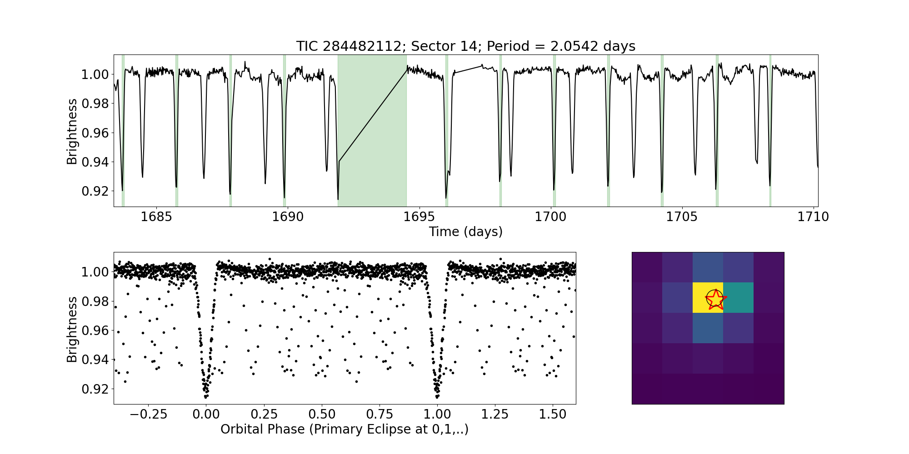

Citizen science projects are collaborations between scientists and members of the public. In these collaborations, volunteers - referred to as citizen scientists - have helped make thousands of important scientific discoveries. You can find more information about NASA citizen science projects here.
Do you want to discover and analyze your own exoplanets using TESS data? Or perhaps observed alreadly discovered planets using ground-based telescope? If so, you can try the following citizen science projects.
Eclipsing Binary Patrol
|  |
Binary stars continue to yield surprises even after hundreds of years of study. An “eclipsing binary” (EB) is a special binary system where one of the component stars occasionally blocks our view of the other star — and vice versa. At Eclipsing Binary Patrol, you can examine space telescope data and help unravel the mysteries of these intriguing systems. You’ll help discover new eclipsing binaries by helping weed out imposters -- objects that blink but are not eclipsing binaries. The eclipsing binaries you help find will be also targets for future exoplanet searches. The science team of this project is mostly composed of citizen scientists. To learn more about the science of binary star systems and the planets that orbit in them, you can read the Research Pages on the project’s website. Eclipsing Binary Patrol is also available in Japanese and French. |
Planet Hunters TESS (PHT)
|
Scientists have developed extremely efficient computer algorithms to find transiting exoplanets. However, planetary systems are highly complex, and their lightcurves are never quite the same. This, combined with the variability of the stars, can confuse the algorightms, yielding wrong results or missing planetary systems entirely. Our eyes and brains, however, are excellent at detecting patterns in noisy data that automated routines may miss! Can you spot the transit of a planet as it passes in front of its parent star in the animation on the right (credits: Oscar Barraga)?
PHT volunteers have already found hundreds of new planetary systems in Kepler and TESS data. Will the next planet be discovered by you? To find out more information about this project and join the hunt visit the Planet Hunters TESS page. |
|
Planet Patrol
|
TESS monitors the brightness of millions of stars in the search for planet candidates. Automated processes help scientists to select the strongest candidates, but those with weaker signals require human intervention for their detection and extraction. At Planet Patrol, you can help find transiting exoplanet systems from TESS that confuse automated algorithms. Planet Patrol’s goals are to inspect the TESS data, and weed out those planet canddiates that are contaminated by instrument and/or astrophysical artifacts. The sequence of TESS images on the right show how the detector sees a star hosting a planet during the observed transits, and the red dot shows the source of the measured loss of light.
Planet Patrol volunteers have already vetted thousands of exoplanets from TESS. Will you join the effort? For more information about this project and how you can get involved you can visit the Planet Patrol page. |
|
Exoplanet Watch
Exoplanet Watch is a citizen science project aimed at observing transiting exoplanets with small telescopes from the ground. This is important, because ground-based observations provide better constraints on the planet’s period which, in turn, allows for better mass measurements. Exoplanet Watch helps increase the efficiency of exoplanet studies by large telescopes to characterize exoplanet atmospheres by reducing uncertainty about the predicted timing of transit events. Exoplanet Watch participants have studied hundreds of different exoplanets, and created thousands of light curves. If you would like to contribute to this project, please visit the Exoplanet Watch page.UNITE: Unistellar Network Investigating TESS Exoplanets
 |
UNITE is a NASA and SETI citizen science project, part of the global Unistellar network, where professional and amateur astronomers work together to observe exoplanet transits. The information provided by these observations help refine the planets' orbits. This is particularly important for planets with long orbital periods and/or long duration transits, where the existing observations can be sometimes of insufficient precision to enable accurate prediction of future transits. The volunteers can use their own telescopes to track the frequency and length of transit periods for exoplanets of their own choise. UNITE citizen scientists have already observed a number of interesting exoplants such as HD 80606b, HD 189733b, Kepler-167e, and supported important results that provided new insight into these faraway worlds. If you would like to contribute to this project, please visit the UNITE page. |